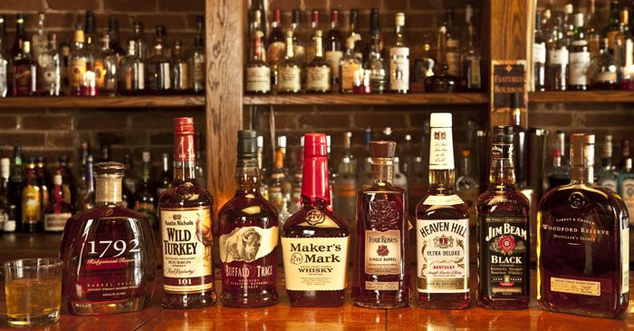

- WILD TURKEY
- Buffalo Trace
- Maker's Mark
미국 문헌에 옥수수를 증류한 후 숙성시켜 만든 증류주는 18세기에 등장하며, 이 위스키에 "버번"이 붙은 것은 1820년도의 어느 때로, 아예 버번 위스키라는 이름이 켄터키 지방의 위스키로서 완전히 고유명사화한 때는 1870년도로 추정된다. 그 명칭은 프랑스 왕조인 부르봉 왕가에서 유래하는데, 미국 독립 전쟁 당시 프랑스에서 도와줬던 사실을 기념하기 위해서 켄터키의 한 카운티 이름을 버번 카운티라 지은 것에서 연유한다.[1]
이 동네에서 생산된 옥수수를 팔 방법이 마땅치 않아 위스키를 만들어서 팔았던 데서 유래한다고. 그런데 재미있게도 버번 카운티는 조례로 금주법을 시행하고 있어 술을 제조할 수 없는 동네가 되었고, 같은 주의 넬슨 카운티가 버번 제조의 중심지가 되었다고 한다.
